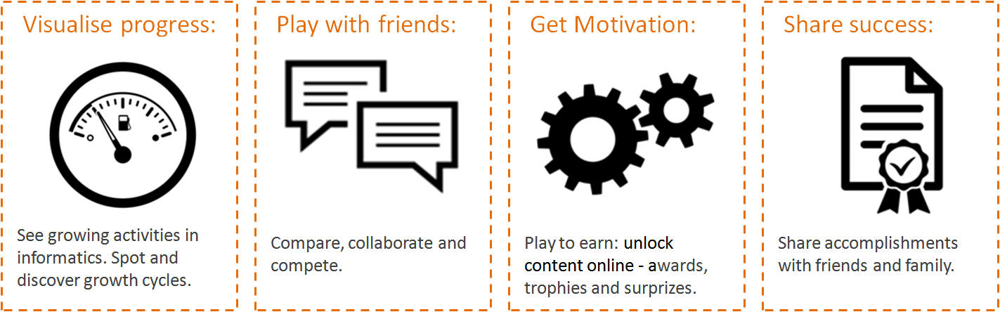

Urban Farming

The smart plant growing device for children... in the home or classroom.
Using a wonderfully immersive gamified growing experience the TableFarm allows interaction with the the growing platform via smartphone, laptop or tablet.
Join the mailing list!In our age of virtual existences and on-line experiences the digital skills and confidence of young children using a tablet, laptop or smart phone is truly impressive...but you'll be truly shocked if you question them about where their food comes from.
How can we develop our children's awareness of the benefits of fresh food using their digital knowledge?
Using a seamless interaction between software and hardware. The TableFarm gameplay makes use of many real-time sensors and plant care opportunities. Chidren will be rewarded in game for their plant progress.
| Image | Pretty picture |
|---|---|
| Soil Moisture | 100% |
| Relative Humidity | 100% |
| Temperature | 50C / 90F |